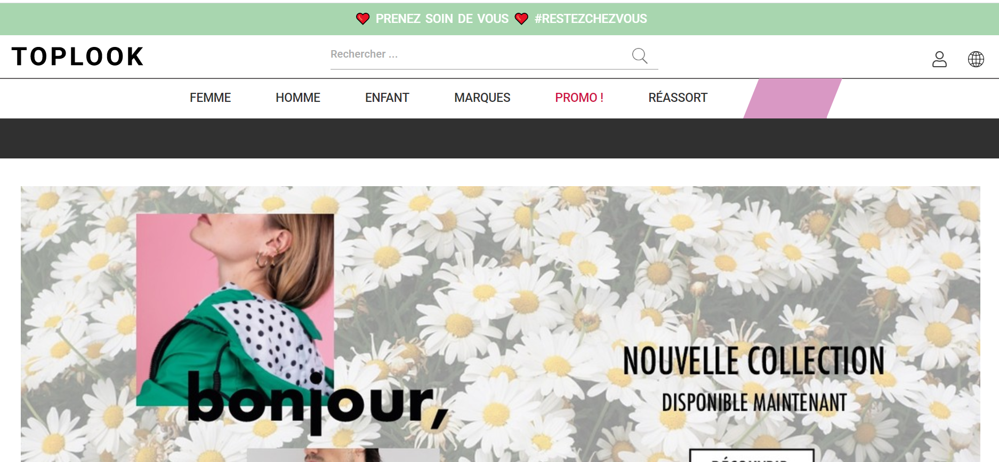

Toplook
site e-commerce pour grossiste https://www.toplook.com/


J’ai contribué à développer certaines fonctionnalités au niveau du back office et site client.
C'est certainement avec ce site où j'ai appris le plus dans le développement web
(liste des fonctionnalités non exhaustives)
Back Office
- Création bordereau Colissimo - consommateur de l’api Colissimo
- Affichage détaillés des produit d’un vendeur
- Gestion de la catégorie chaussures
- Gestion choix des couleurs
Site client
- Affichage carrousel des promos et des produits
- Optimiser la vitesse d’affichage des produits
- Faire une version hybride du site
Technologies utilisés
- PHP 5.6
- MySQL
- Jquery
- Bootstrap
- SVN